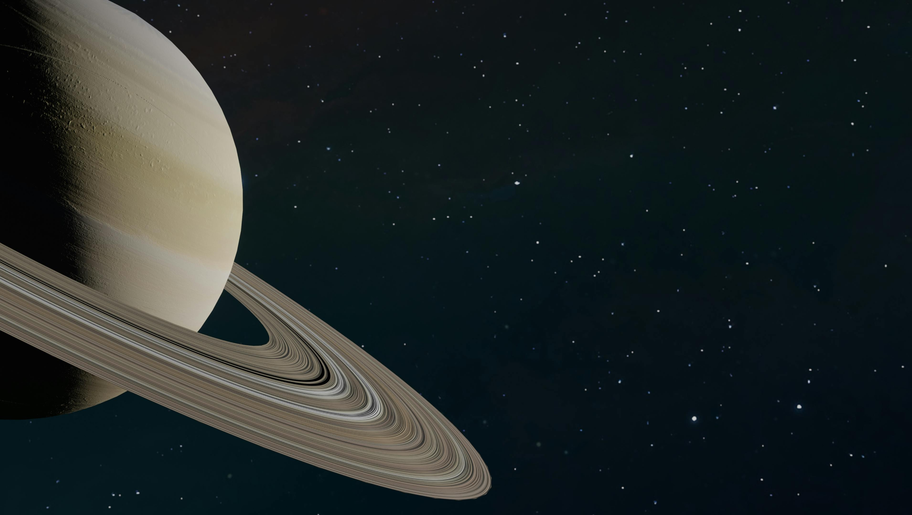
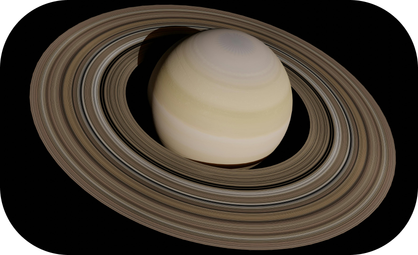
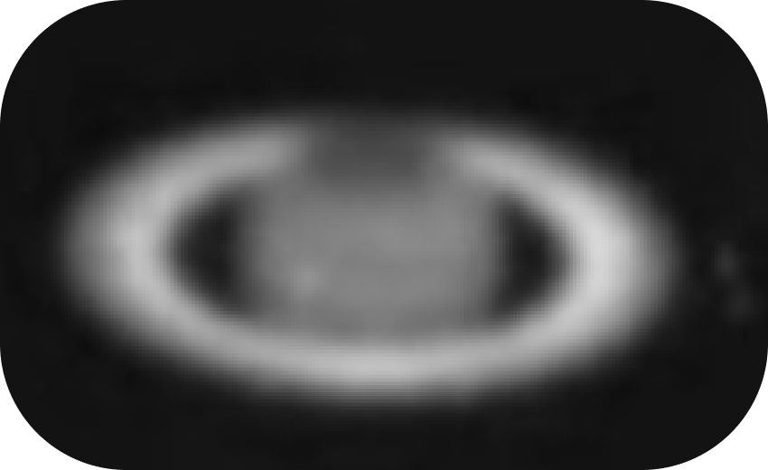
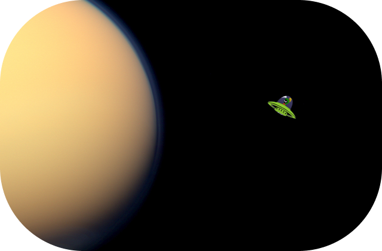
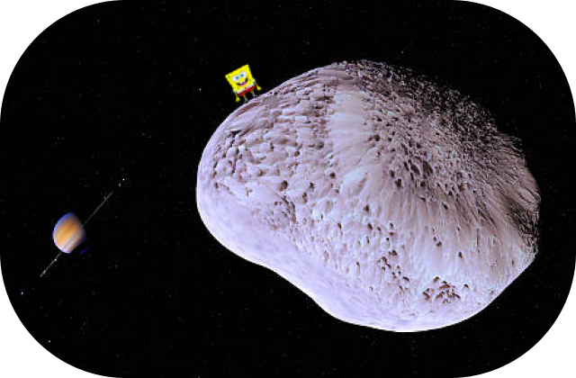
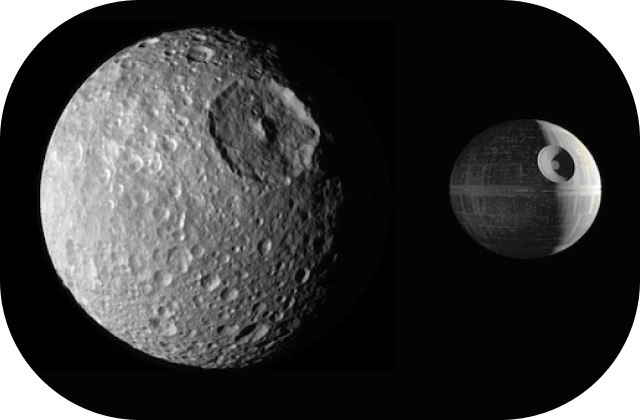
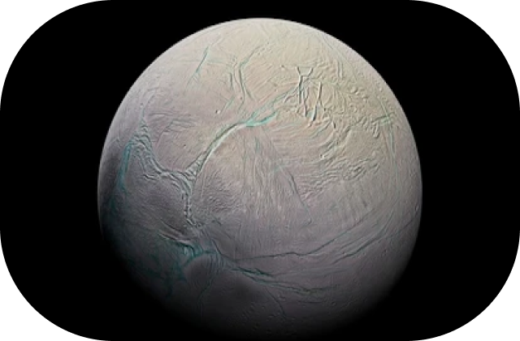

Saturn is the second largest planet in the solar system, and is the sixth planet from the sun. It is a gas giant, made primarily of hydrogen and helium, having no solid surface.
Saturn has rings, made from billions of chunks of ice and rock.
Saturn has 292 moons, including Titan, Enceladus and Rhea.
Saturn has been known to exist since prehistoric times, and is named after the Roman god of agriculture, wealth and liberation. Saturns rings were later observed in 1655 by Christiaan Huygens.
The first photos of Saturn were taken in 1885, by French astronomers Paul and Prosper Henry at the Paris Observatory.


Saturn is 9 times wider than the Earth.
One day on Saturn takes only 10.7 hours.
Saturn is the only planet in the solar system less dense than water, and would float in a giant bathtub
Saturns largest moon, Titan, is larger than the planet Mercury
Every 14 years, Saturns rings appear to disappear from the Earths perspective, because they are tiled edge-on, with this disappearance last occuring in March 2025.
Saturn will permanently lose its rings in 300 million years, under the combined effects of the Suns ultraviolet rays and plasma.




Titan is Saturns largest moon, and is the second largest moon in the solar system after Jupiters moon Ganymede, and it has potential for life, and its strongly suggested that there is the presence of an ocean below the icy ground of the Moon.
Hyperion is a small, irregularly shaped moon, known for its sponge-like appearance, chaotic rotation and extremely low density. Unlike most moons, Hyperion doesnt have a stable rotation rate, and instead tumbles chaotically.
Mimas is the smallest and innermost of Saturns moons, and is known for its Herschel crater, which resembles the Death Star from Star Wars. Despite appearing to be a dead, heavily cratered icy ball, data suggests that Mimas likely holds a subsurface liquid ocean.
Enceladus is a white icy moon, known for its massive plumes of water vapor and ice particles, erupting from a liquid ocean under the ice crust of the moon. Because it is covered in fresh, clean ice, Enceladus has the highest reflectivity in the solar system, reflecting almost 100% of its sunlight